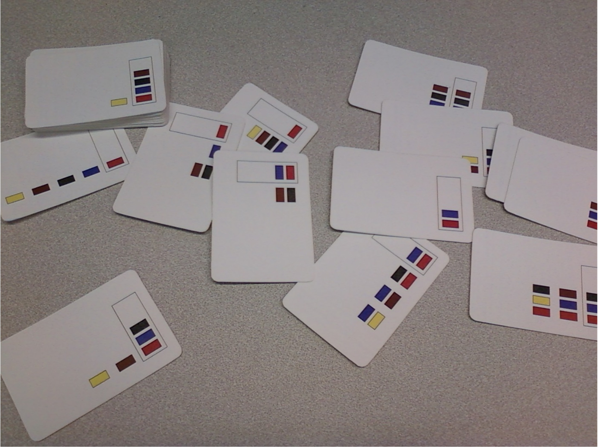
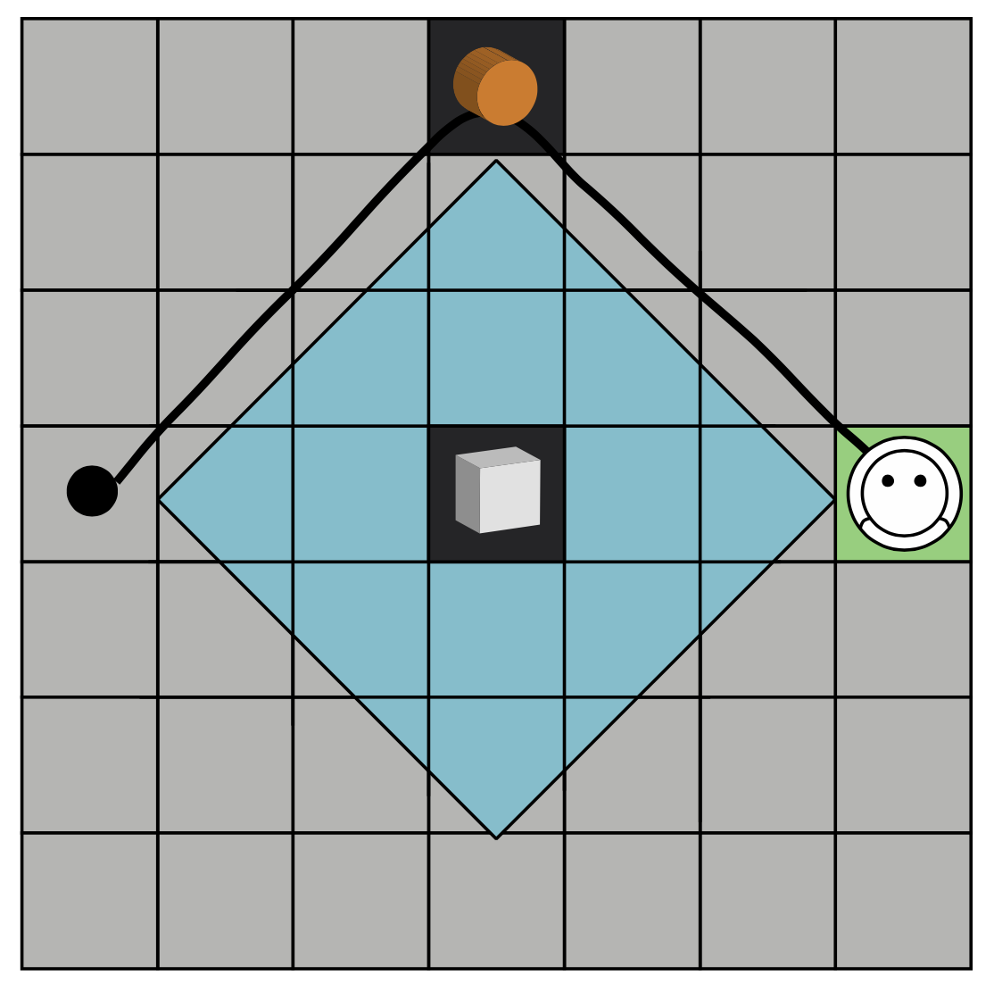
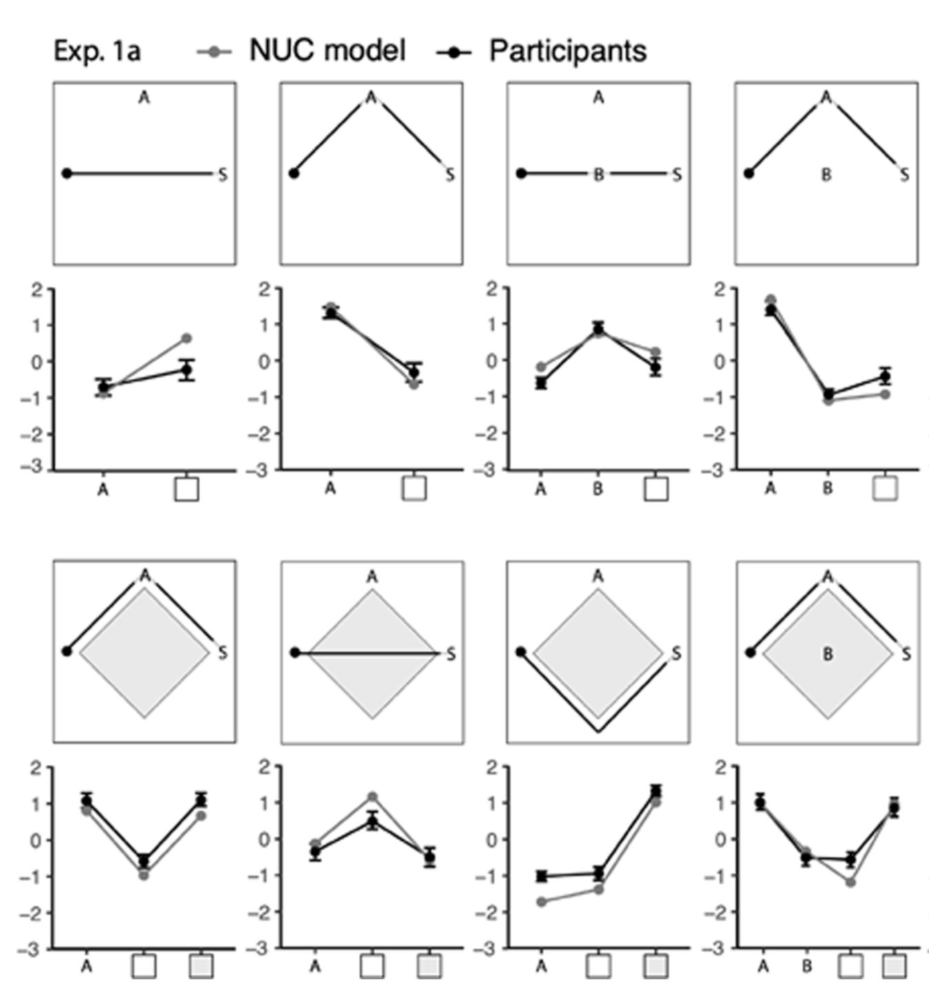

Watch the video below. What do you see?
If you’re like most people, you see more than just lifeless shapes moving around. You see a whole drama play out involving characters with goals and emotions.
This animation, from a 1944 study by Heider and Simmel, is an excellent example of our capacity for social cognition: thinking about other people. We are constantly attributing goals, beliefs, desires, and feelings to others. The fact that we are willing to do it for simple shapes suggests we may not be able to help ourselves from doing it.
When someone takes an action, makes a decision, or makes a facial expression, how do we infer what they’re thinking or feeling? In this chapter, we’ll look at two simple computational approaches to answering this question.
8.1 Inverse decision-making 🍑
All social cognition problems have the same basic character: you observe something about other people and you want to infer some underlying cause of what you observed. For example, you see someone take an action and you want to infer the goal that motivated their action.
The basic idea behind many approaches to understanding how people reason about other people is that people have some kind of mental model of how other people act and they essentially run that model backward (or invert the model) to infer the information they don’t get to see.
Consider a simple decision-making situation. Rue likes peaches more than oranges and oranges more than apples:
🍑 > 🍊 > 🍎
Now you give Rue a choice between these three fruits. Which one is she most likely to choose?
Probably the peach, right? She might choose the orange or the apple because she happens to be in the mood for one of those, but given the information you have, the peach is a good guess.
Now imagine you don’t know Rue’s fruit preferences. She’s offered the following fruits to pick from:
🍑 🍊 🍎
She chooses the peach 🍑. If you had to guess her relative preferences for the fruits, what would you think?
At the very least, you might guess she likes peaches more than oranges and apples. But why?
You assume that people’s choices are guided by preferences and that people’s actions are basically rational. So seeing Rue make one choice from a set of options gives you information about what she likes.
Can we formalize this intuition?1
8.1.1 A preference learning model
Let’s start with some assumptions:
- Each fruit provides some utility to the person who takes it (recall the notion of utility introduced in Chapter 7).
- Utilities are additive, meaning two peaches provide twice as much utility as one peach.
- People will choose options in proportion to their utility. This is the same “softmax” assumption we used in the rational speech act model.
These assumptions combine to give us a choice model, a model of how people will make choices between different options. (We’ve limited our focus to fruits, but the model could be applied to anything.)
\[ \begin{equation} p(c = o_j|\mathbf{u}, \mathbf{A}) = \frac{\exp(U_j)}{\sum^n_{k=1}\exp(U_k)} \end{equation} \tag{8.1}\]
In this model, \(c\) is the choice, \(o_j\) refers to option \(j\), \(\mathbf{A}\) is a vector specifying each option and their attributes (or features), \(\mathbf{u}\) is a vector of utilities that the decision-maker assigns to each attribute, and \(U_j\) is the summed total utility in each option.
8.1.1.1 Inverting the model
Remember that our goal is to infer other people’s preferences, not predict their choices. So, after we see someone make a choice between some fruits, how do we infer what fruits they like best? We can invert Equation 8.1 using Bayes’s rule:
\[ \begin{equation} p(\mathbf{u}|c,\mathbf{A}) = \frac{p(c|\mathbf{u},\mathbf{A})p(\mathbf{u})}{p(c|\mathbf{A})} \end{equation} \tag{8.2}\]
Suppose Rue has a choice between the following options:
Option 1: 🍑 🍎 🍊
Option 2: 🍌
Jules has a choice between the following options:
Option 1: 🍑
Option 2: 🍎 🍊 🍌
Both Rue and Jules pick Option 1, which includes a peach 🍑. Based on their choices alone, who do you think likes peaches more? Or, to put it a different way, which person’s choice would make you more confident they like peaches?
Let’s apply the inverse decision-making model to these two choices.
We’ll start by encoding these choices using a binary encoding scheme in which each element in a list represents a fruit and this element is set to 1 if that fruit is present in the option.
Let’s define a function that calculates the choice probability in Equation 8.1. This is our likelihood function. Run the code below to define the function.
Let’s first assume they both like all fruits equally (they get a utility of 1 from any fruit). What is the probability of Rue and Jules making these choices?
Unsurprisingly, Rue’s choice is much more probable. What if they like peaches four times as much as other fruits?
This increases Rue’s choice probability by just over 10%, but it increases Jules’s choice probability by over 60%.
To invert the model, we also need to specify the prior probability, \(p(\mathbf{u})\). We’ll assume that people generally like fruit, but they are likely to disagree about how much they like different fruits, and there’s a possibility that some people will dislike like certain fruits.
We can capture this idea by assuming that utilities for fruits are normally distributed with a positive mean. Let’s say that they have a mean of 2 and a standard deviation of 0.5:
Additionally, we’ll make the simplifying assumption that utilities for different fruits are independent. This means that knowing someone likes pineapples doesn’t tell you anything about how much they’ll like grapefruits.
Finally, we need a way to compute \(p(c|\mathbf{A})\). In other words, after seeing Rue make a choice, what was the probability of anyone with any preferences making that choice?
Previously, we avoided computing denominators like this by normalizing. This works when you can enumerate the full hypothesis space. This time, the space of hypotheses (all possible assignments of utilities to fruits) is continuous and it’s not easy to integrate over. So we need to do something else.
8.1.1.2 Monte Carlo estimation
We’ll use an estimation method known as Monte Carlo that relies on random sampling.
Here’s the basic idea as it applies to our problem. We want to know the overall probability of someone in the general population making a certain choice. We don’t know what that is, but we do know the distribution of utilities in the general population. That’s the prior \(p(\mathbf{u})\) we just defined. So we can get a close approximation to what we want using the following algorithm:
- Draw a random sample \(\mathbf{u}\) from \(p(\mathbf{u})\).
- Compute \(p(c|\mathbf{u}, \mathbf{A})\).
- Repeat many times.
- Calculate the mean choice probability of all trials.
Let’s write a function to do this. Run the code below to define the function.
Let’s compare the probability of someone making the choices that Rue and Jules made.
Unsurprisingly, Rue’s choice has a much higher baseline probability (because she picked three fruits over one and Jules picked one fruit over three).
8.1.1.3 Putting it all together
Now we’ll infer Rue’s and Jules’s preferences from their choices using Monte Carlo estimation again.
Let’s look at the results.
The model’s inferences here require some interpretation. The model is more certain about Rue having a preference for peach, but the distribution on the Jules’s preference for peach has a much longer tail.
This makes some sense. Because of our mostly positive prior distribution, it’s reasonable to assume by default that Rue likes peaches.
Jules’s choice is a bit odd, so it’s harder to make sense of. One way to explain it is that she simply made a mistake (after all, as we saw above, it’s an improbable choice). Another way to explain it is by assuming she has a very strong preference for peaches. (Of course, the model doesn’t take into account the countless other reasons Jules might prefer one fruit over three.)
8.1.2 Optional homework: Your turn

In your next assignment, you’ll fully implement a version of this model and compare it to data I collected (along with Chris Lucas and Charles Kemp).

8.2 Naïve utility calculus 🧮
Suppose Rue and Jules both make a choice between the same two fruits:
Option 1: 🍑
Option 2: 🍌
They both choose the peach 🍑. The difference is that Rue and Jules had to exert a different degree of effort to make their choices. For Rue, both fruits were placed in a bowl in front of her. For Jules, the peach was in a bowl in front her and the banana was on a high shelf in another room.
In both cases, you’d probably assume they like peaches, but you might conclude there’s weaker evidence that Jules likes them. She may have chosen the peach because it was just convenient.
This (pretty contrived) example shows how people’s choices are a function of both rewards (or preferences) and costs. And when we’re thinking about other people’s behavior, we take their potential rewards and costs into account to understand why they’re doing things.
This idea was best articulated and formalized by Julian Jara-Ettinger and his collaborators. And they incorporated it into a computational model.
Specifically, suppose a person has a plan \(p\) to achieve an outcome \(o\). We can define their utility \(U\) as:
\[ U(o,p) = R(o) - C(p) \]
where \(R(\cdot)\) is their reward from the outcome and \(C(\cdot)\) is the cost they incur from carrying out the plan.
8.2.1 Markov decision processes
Earlier, we considered single decisions that happened in isolation. But lots of behavior involves a series of small decisions that happen in a sequence: the order in which someone prepares and cooks a dish, the route someone takes to get from their workplace to their home, which sections of a book chapter they write first.
A series of decisions is a plan \(p\). And a useful computational framework for choosing optimal plans is a Markov decision process.
To be concrete, let’s focus on the specific environment in Jara-Ettinger et al (2020): a 7x7 grid in which agents can move in any direction, one step at a time.

The locations in the grid are states \(S\). Whenever an agent is in a state \(s\), it can take an action \(a \in A\), moving to any adjacent state. The agent has some goal state in mind (in the figure above, it’s the green square). What we want is an optimal policy that takes a state and returns an optimal action for getting toward the goal state. This can be computed as follows.
First, we compute each state’s optimal value \(V^*(s)\), using this recursive equation:
\[ V^*(s) = \text{max}_a\gamma \sum_{s^\prime} P_{s,a}(s^\prime) V^*(s^\prime) + R(a,s) - C(a,s) \]
where \(P_{s,a}(s^\prime)\) is “the probability that the agent will be in state \(s^\prime\) when she takes action \(a\) in state \(s\) and \(\gamma \in {0,1}\).”
Essentially, this equation requires going through every state in the grid, summing up its rewards and costs, plus the expected downstream rewards and costs of that state.
Solving this recursive function is outside the scope of this book, but there are standard methods for doing it and even Python packages for solving MDPs.
The action policy is then defined as:
\[ \begin{equation} p(a|s) \propto \exp \left( \sum_{s^\prime} P_{s,a}(s^\prime) V^*(s^\prime) \right) \end{equation} \tag{8.3}\]
In their model, they once again introduce a notion of a “softmax” choice rule, rather than assume agents will be perfectly optimal. This makes sense because the goal is to model how people reason about others, and people often have incomplete information about other people.
8.2.2 Inverting the MDP
After seeing an agent take a series of actions \(\mathbf{a}\), we can infer their costs and rewards pretty much the same way we did before, by applying Bayes’s rule.
\[ p(C,R|\mathbf{a}) \propto p(\mathbf{a}|C,R) p(C,R) \]
In the model, they use uniform priors over costs and rewards. Computing \(p(\mathbf{a}|C,R)\) means just applying Equation 8.3 repeatedly for each action the agent took in their sequence. (The researchers also modeled a notion of sub-goals that I’ve omitted.)
8.2.3 Results
The researchers tested their model in a series of experiments in which people saw paths that agents took across the grid and then had to rate the costs and rewards the agent assigned to different states.
Results from one experiment are below.

The cost and reward ratings were separately normalized so that they had a mean of zero. Then they were combined in the plots.
Compared to simpler alternative models, the full naïve utility calculus model provided the best fit to people’s judgments.
The following is based on a model originally developed by Chris Lucas and his collaborators.↩︎